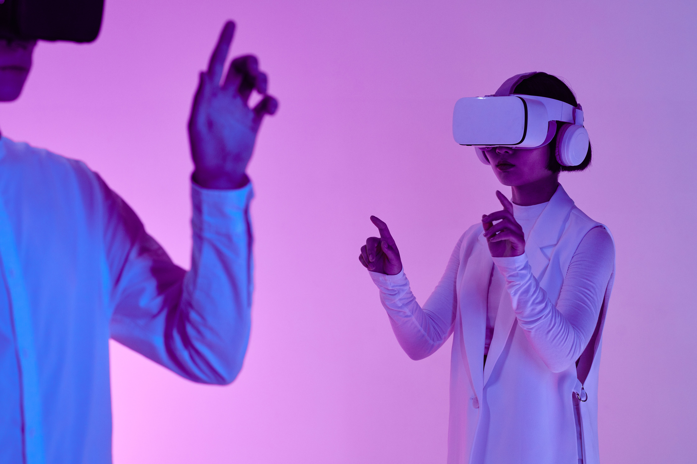

Toucher l'invisible : la réalité virtuelle au bout des doigts
Publié le par Aïcha Camara

Plus besoin de manette : avec les nouveaux casques HoloSense X2, ce sont vos mains qui deviennent l'interface. Un geste du doigt ouvre un menu, un pincement attrape un objet, une paume tournée vers le ciel lance une vidéo.
« Nous voulions que la technologie disparaisse. Quand vous oubliez que vous portez un casque, nous avons gagné. »
Ce que l'on peut déjà faire
- Visiter un musée de Paris depuis Conakry
- Suivre un cours de chirurgie en 3D
- Concevoir une maison et s'y promener avant sa construction
- Organiser des réunions avec des collègues sous forme d'hologrammes
Fiche technique du casque HoloSense X2
- Écran
- Double écran micro-OLED 4K par œil
- Suivi des mains
- 12 caméras infrarouges, précision de 1 mm
- Audio
- Casque spatial intégré avec réduction de bruit
- Autonomie
- Environ 3 h 30 en usage intensif (OLED basse consommation)